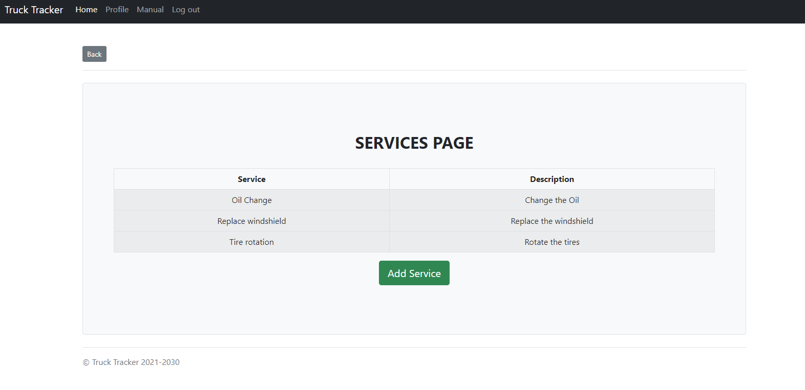

Manual
1. Introduction
We live in a world where time means money. A better management of the current tasks that the employees have to complete, means more time to be spent for other tasks which automatically implies more money for the company. This application is created for a truck company to better keep track of the maintenance records for their vehicles, and for better communication between the employees (drivers, mechanics and the owner). All employees can post notes related to the trucks and their operation, this way a better management of the services needed to be performed is realized. The mechanics can view or record all the repairs and maintenance done to the trucks, while the owner has all the attributes of the employees. He has all the trucks, trailers, notes, maintenance records, services and employees saved in the database, reducing the possibility of maintenance and communication issues.
2. Home Page
At the top of the page, there is a navigation bar with some functionalities accessible from anywhere in the system. The first item is the “Home” button, which will bring you back to your home page. Next is the “Profile” button, which will bring to a page containing information about your account (see below). From the profile page, you will be able to update your name and change your password if necessary. After the profile, there is the “Log Out” button, which will log you out of the system and bring you back to the login page.
2.1 Administrator Page
The admin has access to all functionality within the system. He can add/delete employees, add/delete vehicles, view/add/delete notes, view/add services. Each item on the home page will be described in detail below.
2.2 Mechanic Page
Mechanics have access to all functionality as the admin, except the ability to view and add employees.
2.3 Driver Page
Drivers only posses the ability to view and create notes.
3. Notes
On the notes page, you will see a list of messages made by different users. Below the messages, there are buttons to allow a note to be added or deleted. To create a note, simply click on the “Add Note” button, and you will be brought to a form to add a note (see below). To delete a note, select the button to the left of the note that you want to delete and click the “Delete Note” button. You will be prompted with a message to confirm you actually want to delete the message. Administrators possess the ability to delete any notes within the system, where other users can only delete the notes that they created.
4. Employees
When on the employee page, administrators will be able to view the employees in the system. They will also have the ability to add and delete employees. Clicking the “Add Employee” button will bring you to a page where you can fill out the new employee’s information and add them to the system (see below). To delete an employee, select the button to the left of their name and click the “Delete Employee” button. You will be prompted with a confirmation message and the employee will be deleted if you confirm.
5. Track/Trailer List
Selecting the “Truck/Trailer List” button on the homescreen will bring you to a page that lists all trucks and trailers within the system. From the page, you can click the “View” button to the left of the vehicle to view that vehicle in more detail (see below).
After selecting a vehicle and being brought to that vehicle’s page, you will see the information pertaining to that vehicle as well as the maintenance entities associated with it. If you are an administrator, you will see an option to delete the vehicle if you would like. Deleting a vehicle works by clicking the “Delete Vehicle” button and confirming that you would like to do so. Under the maintenance entries, there is a button that gives you the ability to add a maintenance entry for that vehicle. Clicking the “Add Maintenance” button will bring you to a form where you can fill out information about the entry (see below). After filling out the form, click the “Add Maintenance” button at the bottom and that entry will be added.
6. Services
Services is a storage for the services that can be done to any vehicle in stock. Once a service is saved in this database, it can be used whenever maintenance it’s done. Clicking on the “Services” button on the home page, you will be directed to the services page where all the services will be listed along with a short description (if there is one). Also on this page is a button for adding new services.
If a new service has to be added to the database then by clicking on the “Add Service” button the user can add the service. The description of the service is completely optional. Every page in the “Services” has a back button so the user can return to the previous page. For example: if services like “Oil changed”, “Flat tire changed” or “Light Bulb replaced” are already saved in the database than they can be viewed on this page and used at any time, and if a new service is needed to be added, like “FlatBed Truck Service” has to be done to the vehicle and its not recorded in the database yet, then the user can add it in the database by clicking the “add service” button. Once it is added it will be displayed next to the other services and whenever any maintenance is done to the truck then the service “FlatBed Truck Service” will be available as a choice.